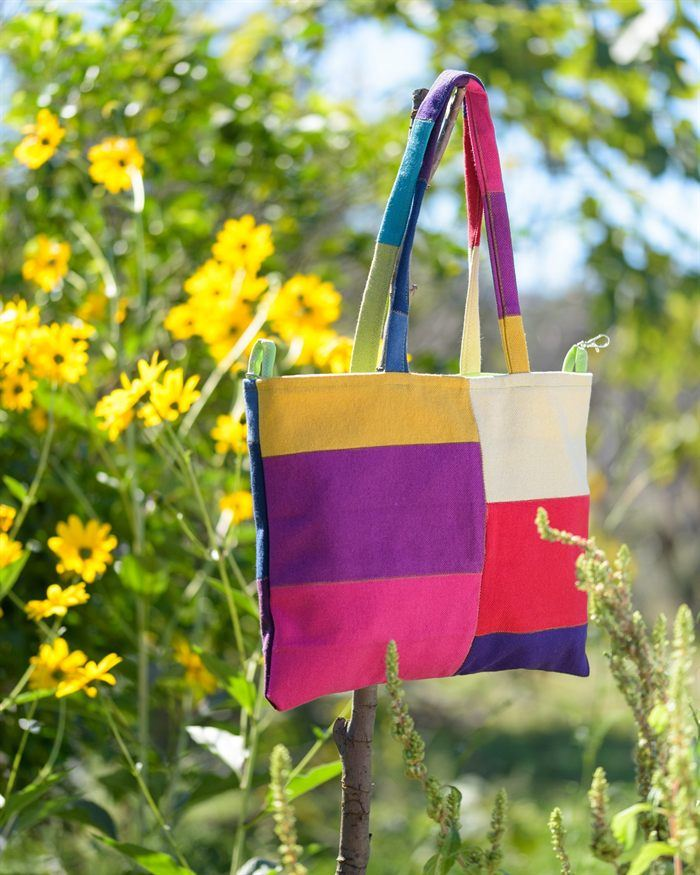

In breve. Upcycling significa trasformare un oggetto usato, uno scarto o un materiale destinato a essere buttato in un oggetto nuovo che vale di più di quello di partenza. A differenza del riciclo, il materiale non viene distrutto per rifarne uno nuovo: resta com'è e cambia forma e funzione. Un esempio tessile: un campionario di tappezzeria che un'azienda dismette e che diventa una borsa.
Da dove viene la parola «upcycling»
La parola unisce up (su, verso l'alto) e recycling (riciclo). Si fa risalire a un'intervista del 1994 a Reiner Pilz, pubblicata dalla rivista SalvoNEWS: Pilz diceva che il riciclo, così come si faceva, era in realtà un downcycling, perché distruggeva i materiali e ne abbassava il valore. Serviva l'opposto: dare agli oggetti vecchi più valore, non meno.
Il termine si è poi diffuso con il libro di Gunter Pauli, uscito in inglese nel 1998 e intitolato «Upcycling» dal 1999.
In italiano si usano anche «riuso creativo», «riciclo creativo» e, per i tessuti, «sartoria rigenerativa», che è il nome che uso per il mio lavoro.
Upcycling, riciclo, downcycling e riuso: le differenze
Sono parole che si confondono spesso. La differenza sta in cosa succede al materiale e in quanto vale alla fine.
- Riuso: l'oggetto si usa di nuovo così com'è e vale come prima. Esempio: un cappotto che passa a un'altra persona.
- Riparazione: l'oggetto si aggiusta e torna a fare la stessa cosa, e dura di più. Esempio: un rammendo sul gomito di un maglione.
- Riciclo: il materiale si scompone (si sfilaccia, si fonde) e si rifà, con un valore uguale o più basso. Esempio: vecchi tessuti sfilacciati per fare nuovo filato.
- Downcycling: il materiale diventa qualcosa di qualità più bassa. Esempio: vestiti ridotti a stracci o imbottiture.
- Upcycling: il materiale resta intero, cambia forma e funzione e vale di più. Esempio: un campionario di tappezzeria che diventa una borsa.
In pratica: il riciclo rompe e rifà, l'upcycling trasforma. Per questo consuma meno energia e meno acqua: il tessuto c'è già, non va prodotto, tinto o filato di nuovo.
Perché l'upcycling conta, soprattutto per i tessuti
Compriamo sempre più tessuti. Secondo l'Agenzia europea dell'ambiente, nel 2022 ogni persona nell'Unione europea ha consumato in media 19 kg di prodotti tessili (erano 17 nel 2019) e ne ha buttati circa 16 kg. L'85% dei rifiuti tessili delle famiglie non è stato raccolto separatamente ed è finito in discarica o nell'inceneritore.
Riciclare un tessuto in un altro tessuto è ancora rarissimo. Secondo il Materials Market Report 2026 di Textile Exchange, nel 2025 nel mondo sono state prodotte 139 milioni di tonnellate di fibre, un record. Il poliestere, cioè plastica, è il 59%. Le fibre riciclate da vecchi tessuti sono appena lo 0,76%.
Anche le leggi stanno cambiando. Dal 19 luglio 2026 nell'Unione europea le grandi aziende non possono più distruggere abiti, accessori e scarpe invenduti. La Commissione europea stima che ogni anno in Europa venga distrutto tra il 4% e il 9% dei tessili invenduti. In Italia la raccolta differenziata dei tessili è obbligatoria dal 1° gennaio 2022, in tutta l'Unione dal 2025.
Il punto è questo: se il riciclo dei tessuti è ancora così difficile, il modo più semplice per non sprecarli è usarli come sono. È quello che fa l'upcycling.
L'upcycling nella moda e nella sartoria
Nella sartoria tradizionale si parte dal filo o da un rotolo di stoffa nuova. Nell'upcycling si parte da quello che c'è già: un capo, un ritaglio, un campione, una tenda. Le forme più comuni sono:
- trasformare un capo: una giacca di jeans ricamata, un maglione con applicazioni di tessuto, una camicia che diventa un'altra camicia;
- il patchwork: tanti pezzi diversi cuciti insieme in una borsa, una tenda, una coperta;
- l'uncinetto con il tessuto: vestiti o tessuti leggeri tagliati a strisce e lavorati come un filo, per fare ceste o borse;
- il rammendo visibile e il ricamo: la riparazione non si nasconde, anzi decora. Non è un'idea nuova: in Giappone il boro e in Bengala il kantha nascono proprio dal bisogno di far durare i tessuti.

Come faccio upcycling da Repunto
Ho creato Repunto a 20 anni. Oggi lavoro da sola, nel mio laboratorio in campagna vicino a Regalbuto, in provincia di Enna.
Il materiale principale sono le cartelle colore di tappezzeria: i campionari con cui le aziende presentano i tessuti per divani, tende e poltrone, e che a fine collezione vengono dismessi. Non sono scarti: sono tessuti nuovi e di qualità, che costano tra i 30 e i 180 euro al metro. Oggi sono le aziende stesse a scrivermi quando devono liberarsene.
Quando arrivano, di solito quattro o cinque scatoloni alla volta, li divido per tipo:
- i tessuti più pesanti e lavorati diventano borse e accessori;
- quelli leggeri, come la georgette e il raso, li taglio a strisce e li lavoro all'uncinetto: diventano ceste.
Poi ci sono i materiali che arrivano da una storia. A volte mi scrive chi ha ereditato le cose di una sarta, e lì trovo filati di cotone e lana, manuali, strumenti. Con quei filati lavoro all'uncinetto più fili di colori diversi insieme, come se fossero un unico grande filo. E c'è la Cesta Tramanda: mi mandi i vestiti di una persona cara, io li taglio a strisce e li lavoro in una cesta che li tiene insieme.
Anche la carta con cui spedisco viene dai campionari, quelli delle carte da parati.
Per me l'upcycling non è una tecnica sola. È un modo di guardare le cose: prima di comprare, chiedersi cosa c'è già. Nulla si crea, tutto si ricuce.
Come iniziare a fare upcycling a casa: 5 idee
- Un copripiatti da un lenzuolo usato. Capovolgi il piatto sul tessuto, segna un cerchio 7 cm più largo tutto intorno, fai l'orlo con un elastico dentro. Sostituisce la pellicola e si lava.
- Un ricamo su un capo che non metti più. Un piccolo disegno può coprire una macchia o rendere tua una giacca qualunque.
- Una shopper da un tessuto grande: una tenda, una tovaglia, un campione di tappezzeria.
- Una cesta all'uncinetto con le strisce di vecchie magliette, che si lavorano facilmente perché il cotone elasticizzato non si sfilaccia.
- Un rammendo visibile sul gomito di un maglione, con un filo di un colore diverso.
Domande frequenti sull'upcycling
Upcycling e riciclo sono la stessa cosa?
No. Il riciclo scompone il materiale per farne uno nuovo, spesso di qualità uguale o più bassa. L'upcycling non distrugge il materiale: lo trasforma in un oggetto che vale di più.
Qual è un esempio di upcycling?
Un campionario di tappezzeria dismesso che diventa una borsa, una giacca di jeans rinnovata con il ricamo, vecchi vestiti tagliati a strisce e lavorati all'uncinetto in una cesta.
Come si dice upcycling in italiano?
Non c'è una traduzione unica. Si usano «riuso creativo», «riciclo creativo» e, per i tessuti, «sartoria rigenerativa».
L'upcycling è davvero sostenibile?
Dipende da cosa si usa. Lo è quando parte da materiali che altrimenti sarebbero buttati e crea oggetti che durano. Non lo è se si comprano cose nuove apposta per trasformarle.
Chi fa upcycling tessile in Italia?
Ci sono molti laboratori e progetti. Repunto, il laboratorio di sartoria rigenerativa di Greta Naselli in Sicilia, trasforma cartelle colore di tappezzeria dismesse in borse, ceste e arredi, e insegna le tecniche dell'upcycling in lezioni e corsi.
Se vuoi provare, ogni mese nella mia newsletter spiego passo per passo un progetto da cucire con quello che hai già in casa. Ti iscrivi dalla home di repunto.it.